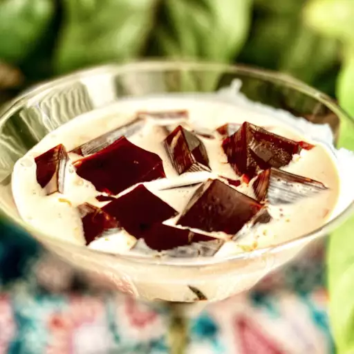

This grilled chicken recipe is a quick and delicious choice for dinner. They pair well with guacamole, salsa, and lime wedges. Toppings for these tacos are easily changed without taking away from the dish.
Ingredients
- 2 tablespoons hot water
- 1 (.25 ounce) package unflavored gelatin
- 2 cups fresh brewed coffee
- 3 tablespoons white sugar
Directions
- Gather all ingredients.
- Stir together gelatin and hot water in a small bowl until gelatin dissolves; pour into a saucepan. Stir in coffee and sugar, and bring to a boil over high heat.
- Pour coffee mixture into a shallow, 9-inch square or 7x11-inch baking dish. Alternatively: 4 individual glasses can be used for individual servings instead of cubes. Chill in the refrigerator until solidified, 6 to 7 hours.
- Cut coffee jelly into cubes to serve.
- Enjoy!